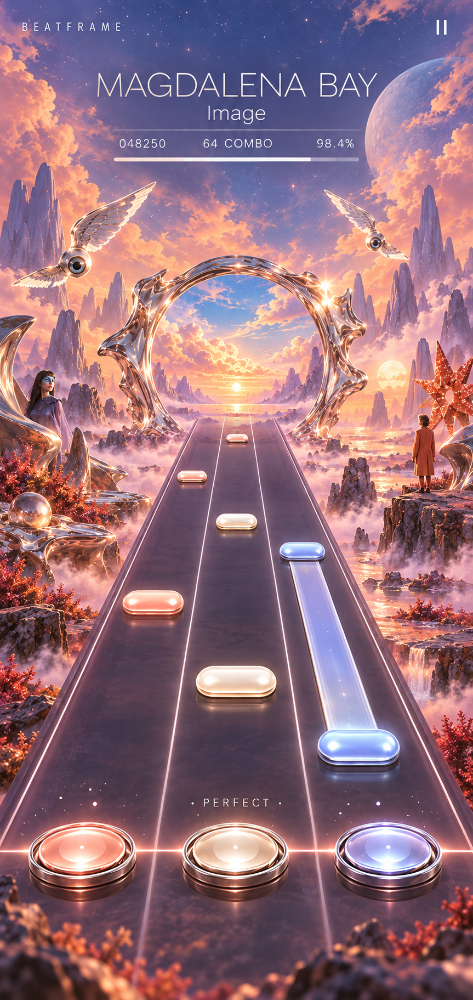
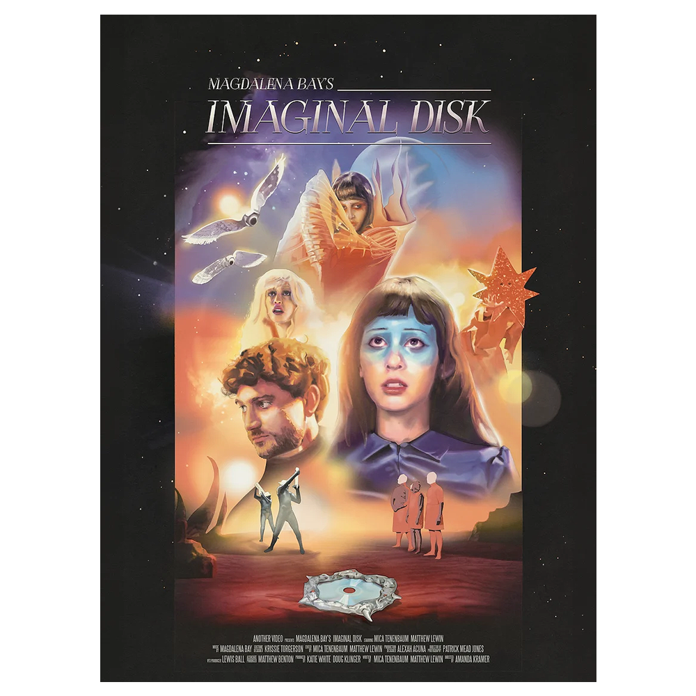

03 / Music / rhythm game
Beatframe
Magdalena Bay’s surreal visual world becomes Imaginal Portal: three centered rhythm lanes inside a peach, periwinkle and liquid-chrome dreamscape.
2 generated art assets · 9 documents. This is a visual and specification review. No playable game, audio visualization, camera capture or model training is included.

Unofficial BEATFRAME V2 concept — Magdalena Bay / Imaginal Portal. Generated screen design informed by Ian Grandjean's official Imaginal Disk poster. UI values are illustrative; no artist endorsement or playable recording is represented.
Nine linked specifications

Unofficial BEATFRAME V2 concept — Magdalena Bay / Imaginal Portal. Generated screen design informed by Ian Grandjean's official Imaginal Disk poster. UI values are illustrative; no artist endorsement or playable recording is represented.
Source references
Existing published imagery is credited separately from generated concept art.

Generated raster concept art; not a capture of a working product.
Credit: Ian Grandjean / Magdalena Bay — official Imaginal Disk poster